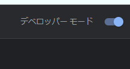
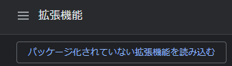
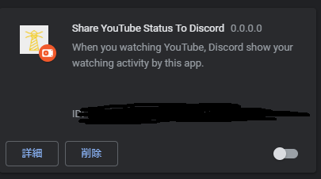

When you watching YouTube, Discord show your watching activity by this app.
あなたがYouTubeを視聴しているとき、Discordのユーザーステータスに視聴している動画が表示されます。
このRepositoryをダウンロードまたはgit cloneする。
Chromeの拡張機能を管理から、デペロッパーモードをオンにします。
パッケージ化されていない拡張機能を読み込む、から先ほどDownload(clone)したフォルダの中にあるChrome-Extensionを選択する。
成功すると、こんな感じになる。※初回はエラーが出ます。エラーを削除して、まだ拡張機能をオフにしておいてください。
上の画像の、IDの部分をコピーなりなんなりして保存しておいてください。この後使用します。
次に、Download(clone)したフォルダの中にある、YouTube Status.exeを起動してください。これを起動すると初回はIDを求められるので、先ほどのIDを入力してください。くれぐれも空文字列のままエンターキーを押さないように気を付けてください。もししてしまった場合は各自ファイルを書き換えてもらうことになります。
そうしたら、次にいよいよ拡張機能をオンにします。拡張機能をオンにして問題が無さそうであれば、unityの起動画面のボタンをonにしてください。これで正常に動作するはずです。
Q:exeファイルがウイルスだって言われて消されてしまうんだけど？
A:exeファイルを配置しているフォルダをウイルスセキュリティソフトの除外設定に入れてください。